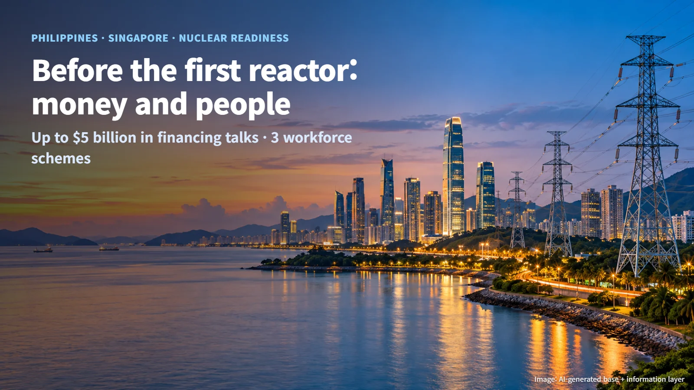
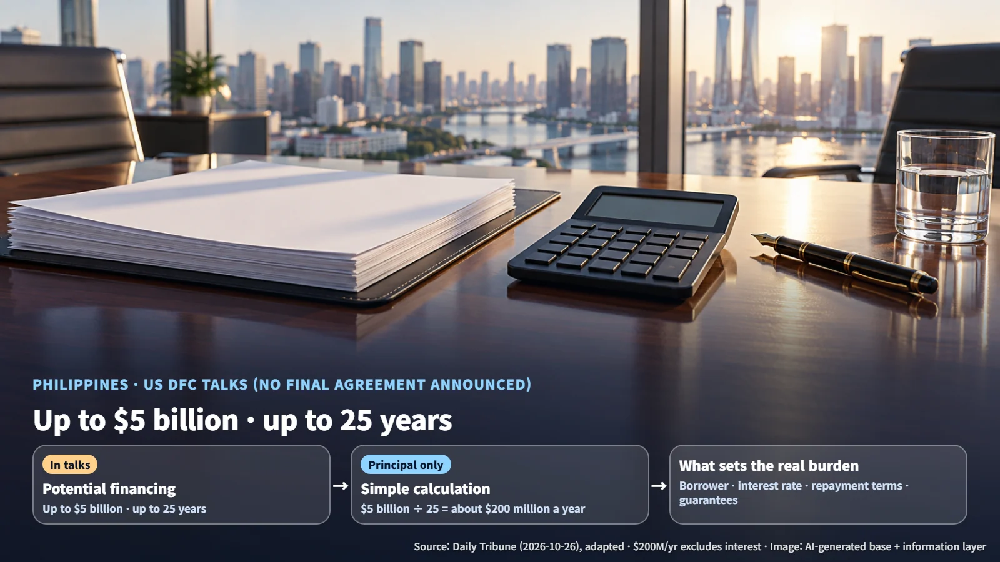
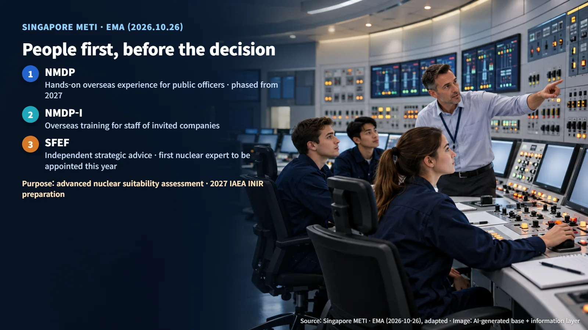
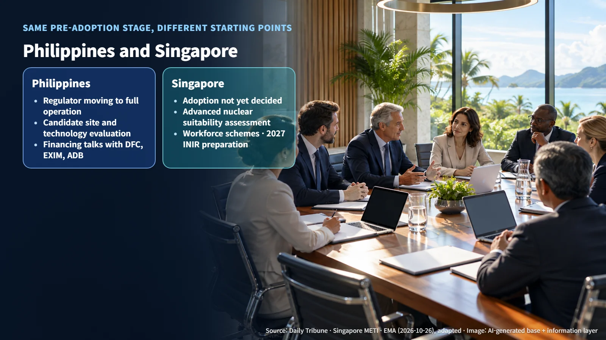

Southeast Asia · Nuclear Readiness
Before the First Reactor, Money and People: The Philippines Talks Financing, Singapore Trains a Workforce
The Philippines is discussing up to $5 billion in potential US financing, while Singapore has launched three schemes to build nuclear expertise before deciding on adoption.
When a country without nuclear power announces it wants to build a plant, most people picture a huge construction site. Yet a great deal of work comes long before the first shovel hits the ground. On October 26, 2026, two countries in Southeast Asia offered a clear look at that early preparation. The Philippines is lining up money. Singapore is building up people.

What a Country Needs Before Its First Nuclear Plant: Money, People and Institutions
A nuclear power plant is expensive to build, runs for a very long time, and needs a regulatory system in place to oversee its safety before anything else can happen. A first-time nuclear country therefore prepares three things together: finance to fund the project, people who can evaluate, oversee and operate a plant, and institutions that handle licensing and safety regulation.
These three pieces move in step. Money turns into a real project only when there are people to assess it and a system to license it. The two announcements show where each country is putting its weight first while both are still at the same pre-adoption stage.
The Philippines: What Talks on Up to $5 Billion in Financing Mean
The Daily Tribune, a Philippine daily, reported on October 26, citing a same-day briefing by the Philippine Department of Energy, that the Philippines has discussed nuclear power development financing with the US International Development Finance Corporation (DFC). Energy Undersecretary Giovanni Carlo Bacordo mentioned potential debt financing (money that is borrowed and repaid) of up to $5 billion over a term of up to 25 years. The report stated that no finalized financing agreement has been announced. The talks are at the discussion stage, and the next step is a formal agreement along with the specific terms of support.
To get a feel for the scale, assume the principal alone is repaid in equal parts over 25 years. The calculation gives about $200 million a year ($5 billion ÷ 25 = $200 million, principal only and excluding interest — a simple calculation). The actual burden will be set once the borrower, the interest rate, the repayment terms and the guarantee structure are decided. Carrying the words "up to" and "potential," the $5 billion figure is the ceiling of the support discussed in the talks.

The Philippines is also discussing feasibility study and design support with the Export-Import Bank of the United States (US EXIM), and financing structures and credit enhancement (mechanisms such as guarantees that lower lending risk) with the Asian Development Bank (ADB). The aim is to ease the heavy upfront investment burden on private developers. With this news, the nuclear conversation in the Philippines is moving toward a concrete question: what structure will pay for the plant?
Singapore: Building the Workforce Before the Decision
On the same day, Singapore's trade and industry ministry (METI) and the Energy Market Authority (EMA) announced three schemes to build nuclear expertise. The Singapore government has not yet decided whether to adopt nuclear energy. The schemes will support the assessment of whether advanced nuclear power suits Singapore and preparation for an IAEA Integrated Nuclear Infrastructure Review (INIR) in 2027.
Each scheme targets a different group:
- NMDP: Government agencies work with overseas nuclear organizations to give public officers hands-on experience. It covers technology assessment, project development, licensing and regulatory capabilities, and is planned to roll out in phases from 2027.
- NMDP-I: Supports overseas training and on-site attachments for staff from Singapore companies selected by invitation.
- SFEF: Supports independent strategic advice from international energy experts and the development of the next generation of talent, with the first appointee with nuclear expertise planned for this year.
AtkinsRéalis, CNNC Overseas and X-energy were named as initial NMDP partners. This cooperation is currently at the training stage. Selecting a technology supplier or signing a construction contract would be separate processes that come later.

What stands out is the order of steps. Singapore is training the people who will make the call before it makes the call. By preparing public officers, industry staff and outside experts together, the government will be able to assess technologies and projects with its own capabilities when the time comes to decide on adoption.
Next Steps: Agreement Terms and the 2027 INIR
Put the two countries side by side. The Philippine Department of Energy is working toward full operation of its regulator, evaluation of candidate sites and technologies, and workforce training, while also carrying the financing talks forward. Singapore, ahead of any adoption decision, is concentrating on the suitability assessment, its workforce and INIR preparation. Both are at the pre-adoption stage, yet the Philippines is laying down the financial structure needed to carry out a project, while Singapore is first building the people who form the basis of its decision.

The INIR is a review in which the International Atomic Energy Agency (IAEA) checks how ready a country considering nuclear power is in its national infrastructure, such as its legal and regulatory framework, workforce and safety management. Think of it as a comprehensive check-up before enrollment. The schemes Singapore launched ahead of its 2027 INIR will train, in advance, the public officers, industry staff and experts who will handle that review and the suitability assessment.
For the Philippines, the next milestones are an announcement of formal agreements and support terms by the DFC, US EXIM and the government; firm details on the borrower, repayment terms, guarantees and project revenue structure; and progress on the scope of the feasibility study and on the regulator and site evaluations. For Singapore, the next milestones are the 2027 training implementation plan, the scope and schedule of INIR preparation, the terms for industry participation, and expert appointments along with a wider group of partner organizations.
A nuclear program starts in meeting rooms and training centers before it reaches a construction site. Watching how fast the money and the people come together tells you how far along a country's nuclear plans really are.